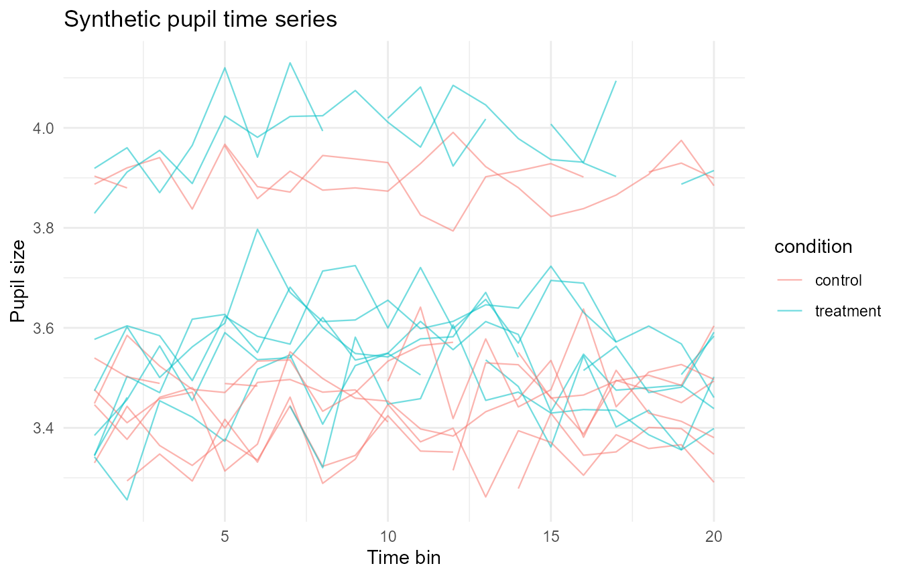
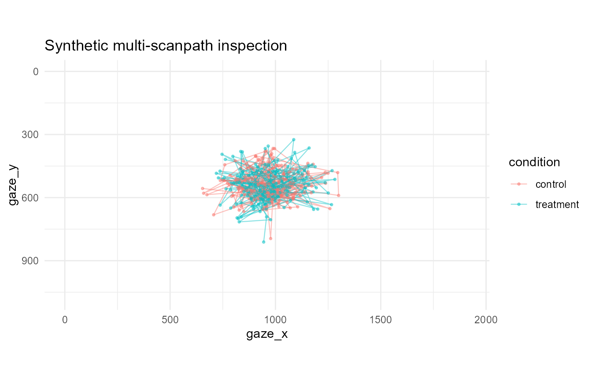
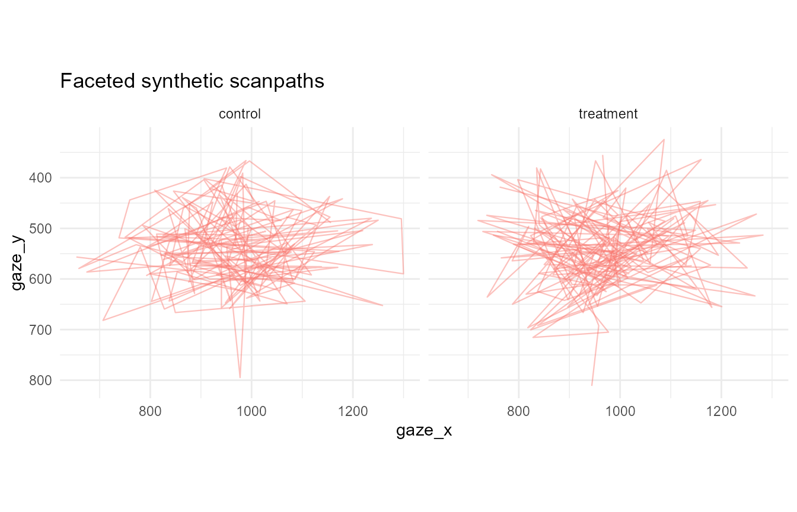

Scanpath and quality-control quick wins
Source:vignettes/articles/scanpath-qc-quick-wins.Rmd
scanpath-qc-quick-wins.RmdThis article demonstrates a compact set of descriptive helpers for privacy-safe examples, binocular pupil preparation, trackloss review, time-series plotting, and multi-scanpath visual inspection. These helpers are intended for transparent quality control and documentation. They do not replace study-specific preprocessing decisions or inferential modelling.
Simulate pupil and gaze data
simulate_gazepoint_pupil_data() creates a small
synthetic data set with participant, trial, condition, time-bin,
gaze-coordinate, left-pupil, right-pupil, blink, trackloss, and
combined-pupil columns.
synthetic <- simulate_gazepoint_pupil_data(
n_subjects = 4,
n_trials = 4,
n_time_bins = 20,
conditions = c("control", "treatment"),
blink_probability = 0.05,
seed = 123
)
head(synthetic)
#> subject trial condition time_bin timestamp_ms gaze_x gaze_y pupil_left
#> 1 S001 1 control 1 0.00 993.1529 498.0263 3.355974
#> 2 S001 1 control 2 16.67 977.2926 794.7236 3.484336
#> 3 S001 1 control 3 33.34 950.9250 535.9970 3.385504
#> 4 S001 1 control 4 50.01 1219.3699 504.5001 3.248926
#> 5 S001 1 control 5 66.68 993.1579 563.9892 3.296683
#> 6 S001 1 control 6 83.35 941.0047 414.5260 3.317478
#> pupil_right blink trackloss pupil
#> 1 3.303798 FALSE FALSE 3.329886
#> 2 3.401831 FALSE FALSE 3.443084
#> 3 3.343765 FALSE FALSE 3.364635
#> 4 3.400768 FALSE FALSE 3.324847
#> 5 3.458472 FALSE FALSE 3.377578
#> 6 3.353714 FALSE FALSE 3.335596The generator is designed for examples and tests. It should not be used to make claims about empirical pupil physiology.
Combine left and right pupil channels
combine_gazepoint_eyes() combines two eye-specific
numeric columns into a single analysis column. The default method
averages available left/right values. Other options can prefer one eye
or choose the globally less-missing eye.
combined <- combine_gazepoint_eyes(
synthetic,
left_col = "pupil_left",
right_col = "pupil_right",
output_col = "pupil_combined",
method = "mean",
valid_min = 1,
valid_max = 9
)
head(combined[, c("pupil_left", "pupil_right", "pupil_combined")])
#> pupil_left pupil_right pupil_combined
#> 1 3.355974 3.303798 3.329886
#> 2 3.484336 3.401831 3.443084
#> 3 3.385504 3.343765 3.364635
#> 4 3.248926 3.400768 3.324847
#> 5 3.296683 3.458472 3.377578
#> 6 3.317478 3.353714 3.335596Flag groups by trackloss
clean_gazepoint_by_trackloss() computes trackloss rates
globally or within grouping columns. Here, participant-trial groups with
more than 20% trackloss are flagged.
trackloss_flagged <- clean_gazepoint_by_trackloss(
synthetic,
group_cols = c("subject", "trial"),
tracking_col = "trackloss",
max_trackloss = 0.20,
action = "flag"
)
head(trackloss_flagged[, c("subject", "trial", "trackloss", ".gp3_trackloss_rate", ".gp3_trackloss_exclude")])
#> subject trial trackloss .gp3_trackloss_rate .gp3_trackloss_exclude
#> 1 S001 1 FALSE 0.95 TRUE
#> 2 S001 1 FALSE 0.95 TRUE
#> 3 S001 1 FALSE 0.95 TRUE
#> 4 S001 1 FALSE 0.95 TRUE
#> 5 S001 1 FALSE 0.95 TRUE
#> 6 S001 1 FALSE 0.95 TRUEA compact group-level summary is stored as an attribute.
head(attr(trackloss_flagged, "gp3_trackloss_summary"))
#> group_id n_rows n_trackloss_rows trackloss_rate exclude
#> 1 S001.1 20 19 0.95 TRUE
#> 2 S001.2 20 19 0.95 TRUE
#> 3 S001.3 20 19 0.95 TRUE
#> 4 S001.4 20 17 0.85 TRUE
#> 5 S002.1 20 19 0.95 TRUE
#> 6 S002.2 20 20 1.00 TRUEThe same helper can filter high-trackloss groups, but filtering should normally be reported as an explicit preprocessing decision.
Plot a descriptive time series
plot_gazepoint_time_series() provides a general
descriptive line plot for pupil, gaze, AOI, or other time-varying
measures that have already been prepared by the user.
plot_gazepoint_time_series(
synthetic,
time_col = "time_bin",
value_col = "pupil",
group_cols = c("subject", "trial"),
colour_col = "condition",
title = "Synthetic pupil time series",
x_label = "Time bin",
y_label = "Pupil size"
)
This plot is descriptive. It does not smooth, model, or test condition differences.
Plot multiple scanpaths
plot_gazepoint_scanpaths() supports quick visual
inspection of gaze paths across participants, trials, or conditions.
plot_gazepoint_scanpaths(
synthetic,
x_col = "gaze_x",
y_col = "gaze_y",
order_col = "time_bin",
group_cols = c("subject", "trial"),
colour_col = "condition",
screen_width = 1920,
screen_height = 1080,
title = "Synthetic multi-scanpath inspection"
)
For crowded data, faceting can make trial or condition-level review easier.
plot_gazepoint_scanpaths(
synthetic,
x_col = "gaze_x",
y_col = "gaze_y",
order_col = "time_bin",
group_cols = c("subject", "trial"),
facet_col = "condition",
show_points = FALSE,
title = "Faceted synthetic scanpaths"
)
Audit screen bounds
audit_gazepoint_screen_bounds() checks whether gaze
coordinates are missing, equal to (0, 0), or outside
expected screen or stimulus bounds. This is useful before heatmaps, AOI
checks, or scanpath visualisation.
screen_audit <- audit_gazepoint_screen_bounds(
synthetic,
x_col = "gaze_x",
y_col = "gaze_y",
screen_width = 1920,
screen_height = 1080,
group_cols = c("subject", "trial")
)
screen_audit$overall_summary
#> n_rows n_missing_coordinate n_zero_zero n_outside_bounds n_invalid_coordinate
#> 1 320 0 0 0 0
#> missing_coordinate_rate zero_zero_rate outside_bounds_rate
#> 1 0 0 0
#> invalid_coordinate_rate
#> 1 0The row-level and group-level outputs make the diagnostic transparent without automatically changing the data.
head(screen_audit$group_summary)
#> group_id n_rows n_missing_coordinate n_zero_zero n_outside_bounds
#> 1 S001.1 20 0 0 0
#> 2 S001.2 20 0 0 0
#> 3 S001.3 20 0 0 0
#> 4 S001.4 20 0 0 0
#> 5 S002.1 20 0 0 0
#> 6 S002.2 20 0 0 0
#> n_invalid_coordinate missing_coordinate_rate zero_zero_rate
#> 1 0 0 0
#> 2 0 0 0
#> 3 0 0 0
#> 4 0 0 0
#> 5 0 0 0
#> 6 0 0 0
#> outside_bounds_rate invalid_coordinate_rate
#> 1 0 0
#> 2 0 0
#> 3 0 0
#> 4 0 0
#> 5 0 0
#> 6 0 0Harmonize screen coordinates
harmonize_gazepoint_screen_coordinates() rescales gaze
coordinates from one screen or stimulus resolution to another. This is a
deterministic transformation for harmonising exports before plotting or
descriptive summaries. It is not a recalibration method.
harmonized <- harmonize_gazepoint_screen_coordinates(
synthetic,
x_col = "gaze_x",
y_col = "gaze_y",
from_width = 1920,
from_height = 1080,
to_width = 1280,
to_height = 720
)
head(harmonized[, c("gaze_x", "gaze_y", "gaze_x_harmonized", "gaze_y_harmonized")])
#> gaze_x gaze_y gaze_x_harmonized gaze_y_harmonized
#> 1 993.1529 498.0263 662.1020 332.0175
#> 2 977.2926 794.7236 651.5284 529.8157
#> 3 950.9250 535.9970 633.9500 357.3313
#> 4 1219.3699 504.5001 812.9133 336.3334
#> 5 993.1579 563.9892 662.1052 375.9928
#> 6 941.0047 414.5260 627.3365 276.3507These visualisations are intended for quality review and documentation, not as inferential scanpath-comparison methods.